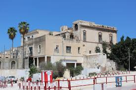
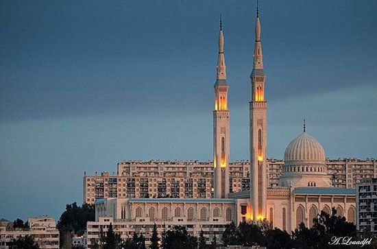
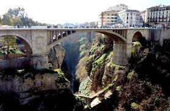

Inicio >> Africa >> Argelia >> Constantina
Constantina
Debe su nombre al emperador Constantino, que hizo reconstruir la ciudad devastada por Majencio y Domicio Alejandro. Su nombre anterior fue Cirta.1 Se cree que Constantina fue la capital de la antigua Numidia, un imperio bereber que emergió en el siglo III a. C. Un profundo barranco de apariencia espectacular rodea la ciudad, que es muy pintoresca, con varios puentes y un viaducto cruzando este despeñadero. Durante el período otomano, la ciudad fue gobernada por un Bey. El último bey de Constantina, Áhmed, ofreció fiera resistencia a las fuerzas de ocupación francesas en 1836.

Vale: Constantina es una de las joyas más desconocidas del norte de África, una ciudad que conserva ocho espectaculares puentes, el último de ellos, Pont Salah Bey, de 2014, y otros siete que se remontan a la época colonial. El más antiguo, Pont Sidi Rached, data de 1863. Estructuras impresionantes que son a la vez miradores de auténtico vértigo. Algunos de los estrechos puentes peatonales a más de 300 metros de altura sobre el abismo son realmente aterradores. Ciudad de la Cultura Árabe en 2015, aquí se dan la mano naturaleza y patrimonio histórico.
El Ahmad Bey Palace es un palacio histórico en Constantina, Argelia. El palacio fue uno de los principales lugares de interés durante la selección de Constantino como Capital Árabe de la Cultura en 2015
El viaducto transrhumel o también Conocido como viaducto de Salah Bey estuvo marcado por importantes obras urbanas. Este viaducto ya se considera la "octava maravilla" de la ciudad con siete puentes. Con una longitud de 1119m, el viaducto tiene un diseño futurista, que modernizó la configuración urbana de la ciudad.
Emir Abdelkader Mosquee Este es uno de los lugares que más resltan en la visita a Constantina, es hermosa, especialmente desde el interior con una arquitectura espectacular.
El Puente Sidi M'Cid es un puente colgante de 164 m de longitud que cruza el río Rhummel en Constantina. Fue abierto al tráfico en abril de 1912 y hasta 1929 fue el puente más alto del mundo con una altura de 175 m.
ElPuente de Sidi Rached es un puente de la carretera que cruza el desfiladero del río Rhummel y conecta el distrito Coudiat a la estación de Constantino. Fue construido en Constantina en Argelia entre 1908 y 1912 por el ingeniero Aubin Eyraud, era el más puente de piedra más alto en el mundo cuando fue construido.

FACEBOOK
TWITTER
INSTAGRAM